|
BuddhaSasana Home Page |
Vietnamese, with Unicode Times font |
Các nơi Kết tập Tam Tạng
Ðọc thêm: Lịch sử Kết tập Kinh điển, Tỳ kheo Thiện Minh (2003)
Ðại
Hội Kết Tập I: Vương Xá (Rajagaha), Ấn Ðộ
(khoảng năm 486 TCN)
| 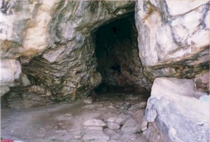
Hang kết tập |
Source: Phạm Kim Khánh, "Hành hương xứ Phật", 1998
Ðại
Hội Kết Tập II: Vesali, Ấn Ðộ
(khoảng năm 386 TCN)
| 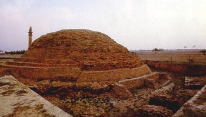 | 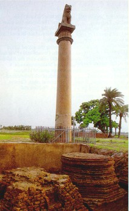
Trụ đá Asoka |
| 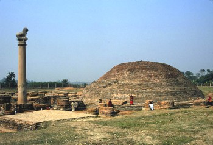 |
Source: various, from the Internet (03-2003)
Ðại
Hội Kết Tập III: Pataliputta, Ấn Ðộ
(khoảng năm 250 TCN)
| 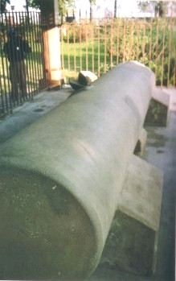 | 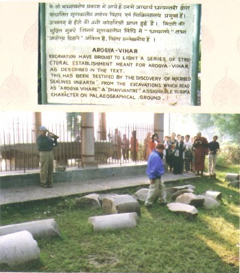 |
Source: Phạm Kim Khánh, "Hành hương xứ Phật", 1998
Ðại
Hội Kết Tập IV: Aluvihara, Matale, Sri Lanka
(khoảng đầu kỷ nguyên Tây Lịch)
| 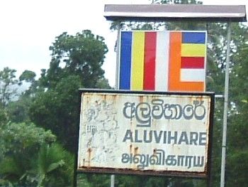 | 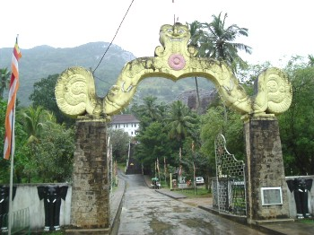 |
| 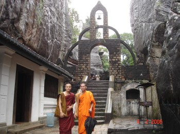 | |
| 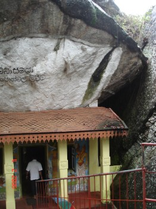 | 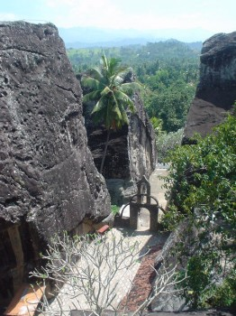 |
Source: Bình Anson (02-2006)
Ðại
Hội Kết Tập V: Kuthodaw Paya, Mandalay, Myanmar
(năm 1868-1871)
| 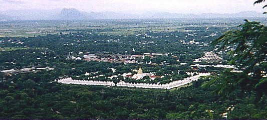 | |
| 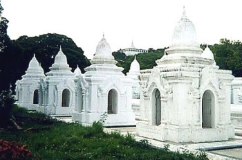 | |
| 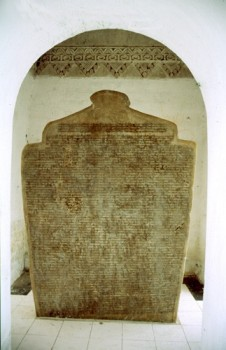 | 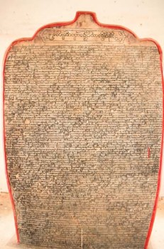 |
Source: various, from the Internet (03-2003)
Ðại
Hội Kết Tập VI: Yangon, Myanmar
(năm 1954-1956)
|
Chùa Kabar Aye (Hòa bình Thế giới) |
|
| 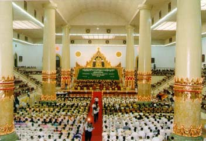
Ðộng Kết tập Maha Pasana |
Bảo tàng viện |
Source: various, from the Internet (03-2003)
[Trở
về trang Thư Mục]
last updated: 17-04-2006